P01 · 7 slides
Abrir o carrossel, a legenda e os arquivos
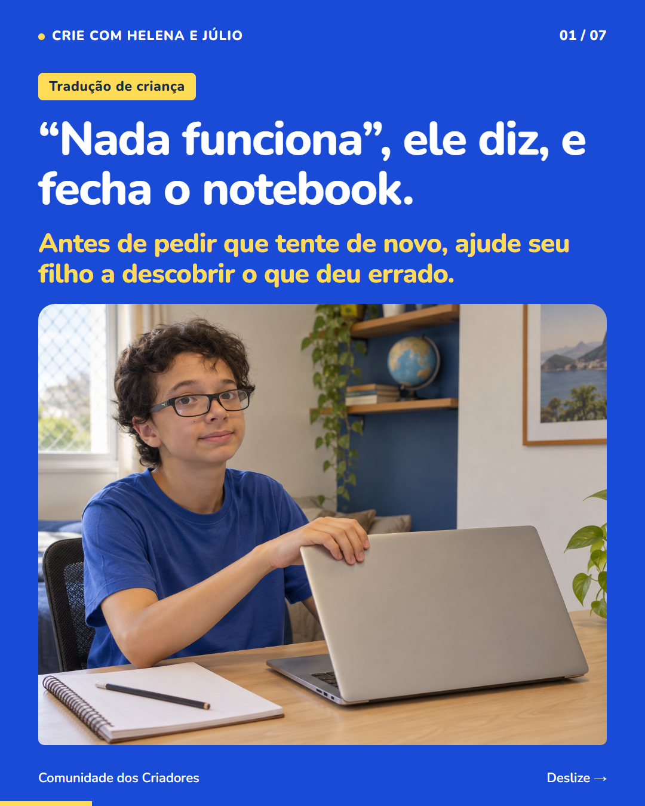
P07 · 7 slides
Abrir o carrossel, a legenda e os arquivos
P34 · 8 slides
Abrir o carrossel, a legenda e os arquivos
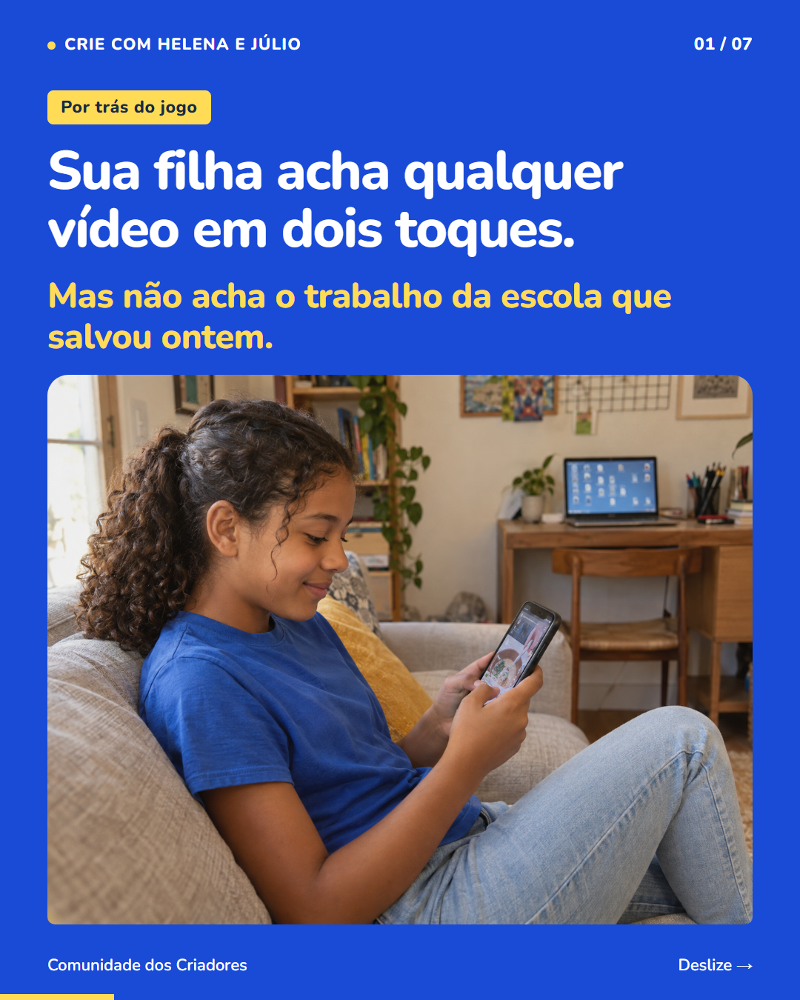
P04 · 7 slides
Celular, arquivos e primeiros passos no computador
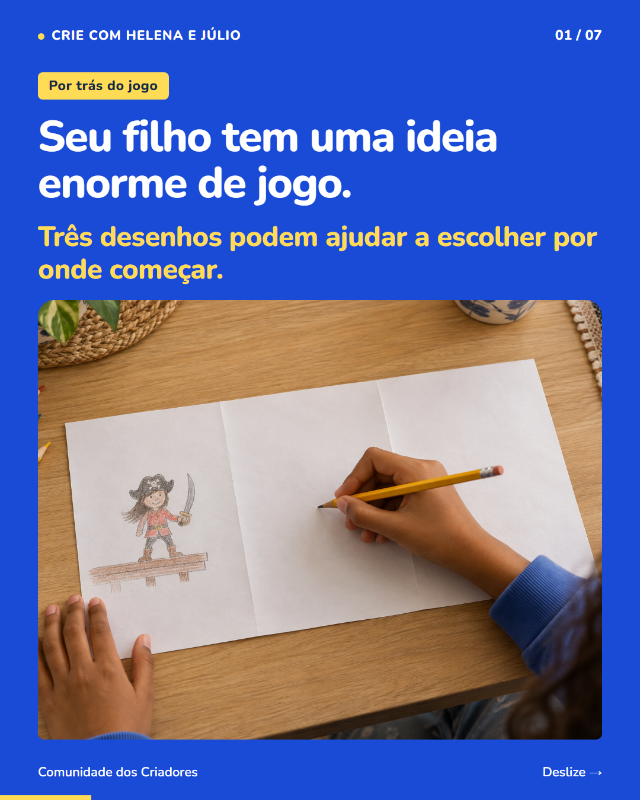
P37 · 7 slides
Três desenhos para escolher por onde começar um jogo

P20 · 7 slides
Conversar, ouvir e acompanhar as ideias da filha
P31 · 7 slides
Inventar uma busca pelo tesouro para outra pessoa

P40 · 7 slides
Explicar um caminho e organizar instruções para um jogo
P44 · 7 slides
Como os números mudam a duração de uma batalha
P05 · 8 slides
Acompanhar de perto o que seu filho faz na tela
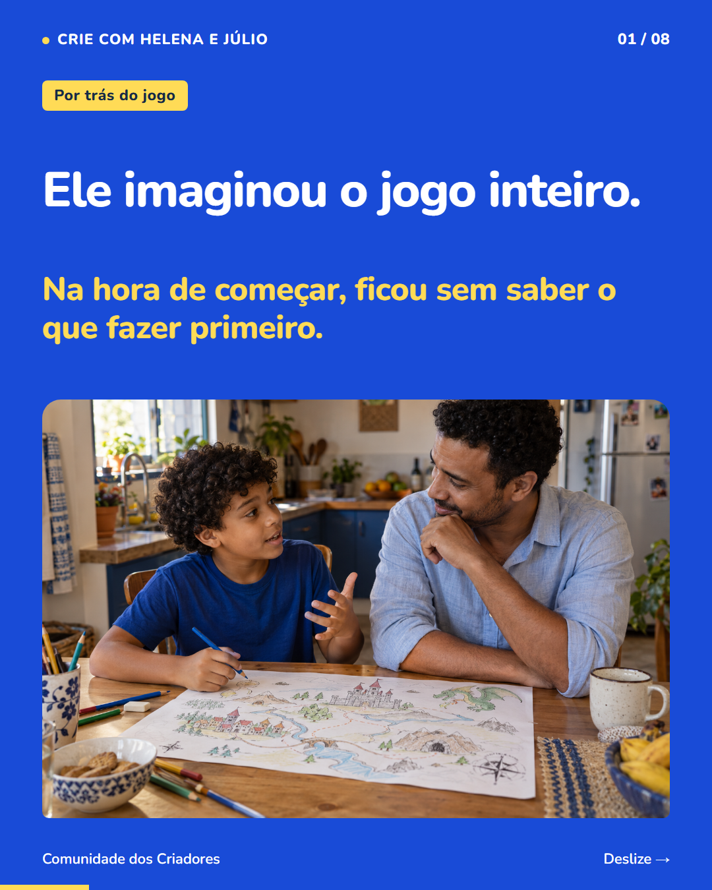
P11 · 8 slides
Escolher uma primeira cena para começar a criar um jogo
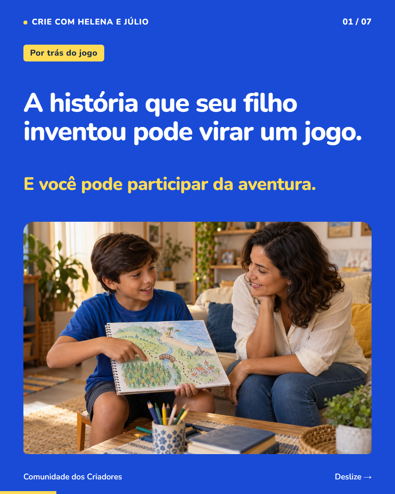
P35 · 7 slides
Uma história que vira aventura, com caminhos e personagens
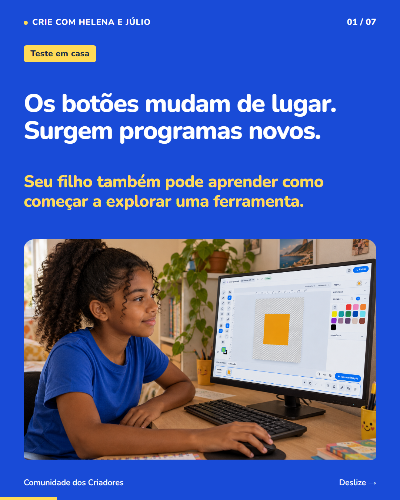
P46 · 7 slides
Uma tarefa pequena para começar a aprender uma ferramenta

P28 · 7 slides
Computador, mouse e teclado na criação de jogos
P54 · 7 slides
Combinar a parada e deixar preparado o próximo passo
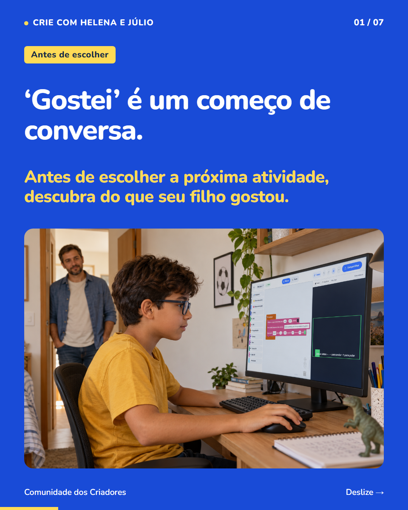
P55 · 7 slides
Ouvir a criança e conhecer o que ela gostou de fazer
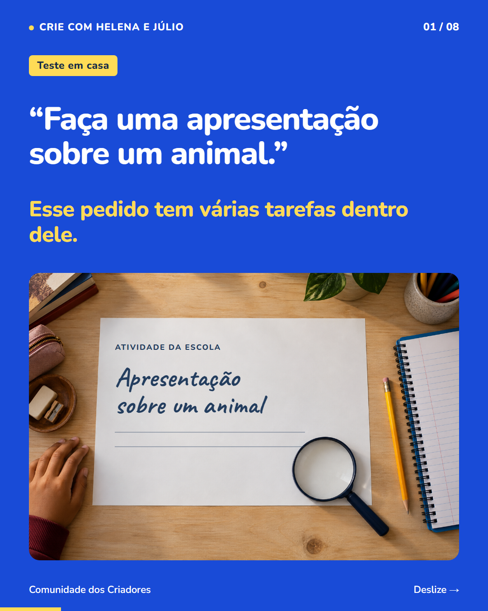
P13 · 8 slides
Separar uma atividade em tarefas e escolher o próximo passo
P50 · 7 slides
Compartilhar um jogo e conversar sobre a criação
P52 · 9 slides
Do interesse por futebol à criação de regras de um jogo

P09 · 7 slides
Conversar sobre uma escolha e testar o que ela muda no jogo

P42 · 7 slides
Combinar o resultado de uma tarefa e testar o objetivo do jogo

P25 · 8 slides
Conhecer a continuação das atividades e os caminhos de ajuda

P18 · 8 slides
Conhecer as dúvidas e o acompanhamento antes de escolher

P21 · 7 slides
Ver a atividade: escolher uma regra e conferir o resultado
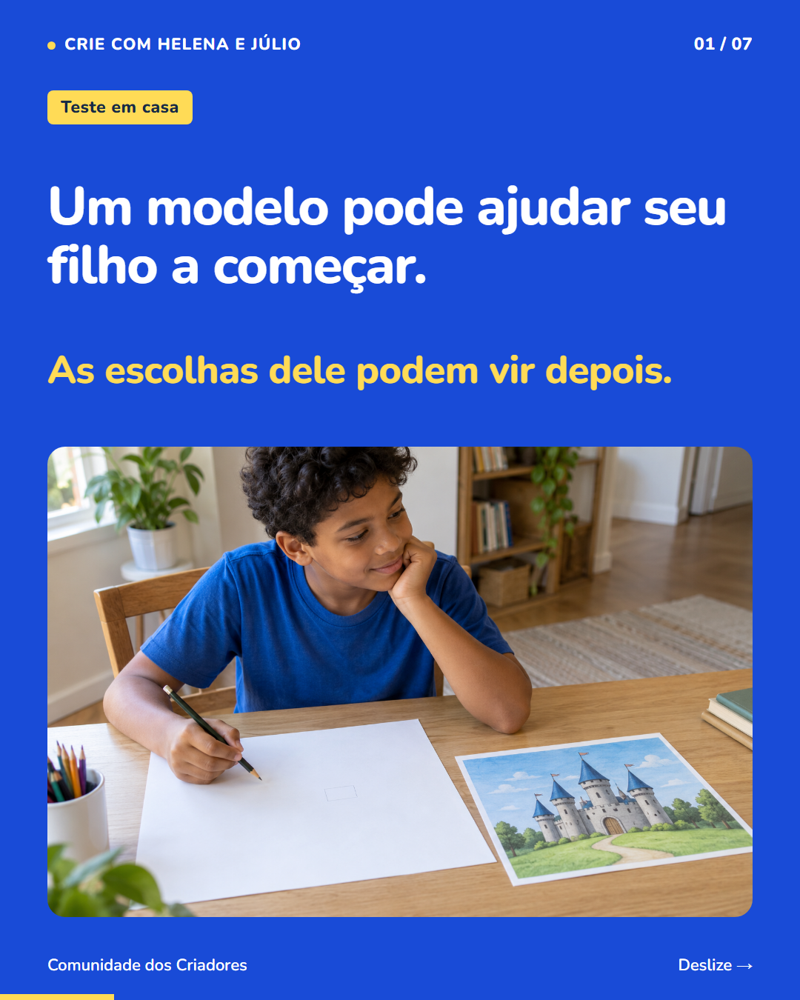
P15 · 7 slides
Primeiras escolhas: partir de um modelo e experimentar uma mudança
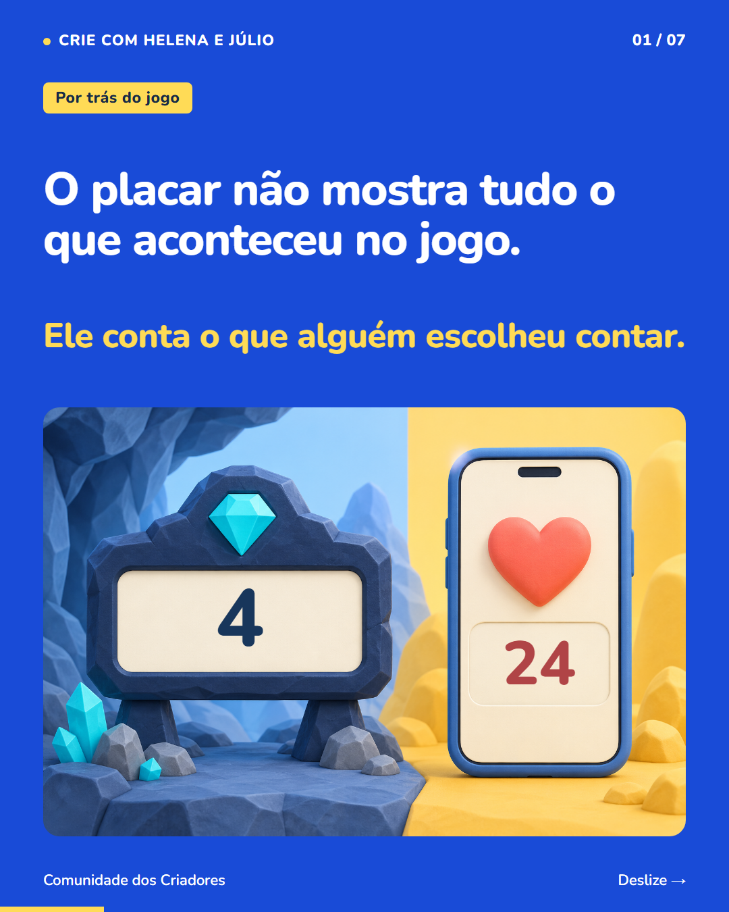
P48 · 7 slides
O que o placar conta: pedra, cristal e a escolha da regra
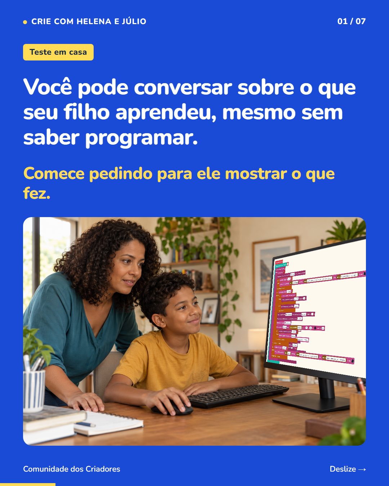
P26 · 7 slides
Conversar sobre o que aprendeu: mostrar, prever e testar no Equilibrista
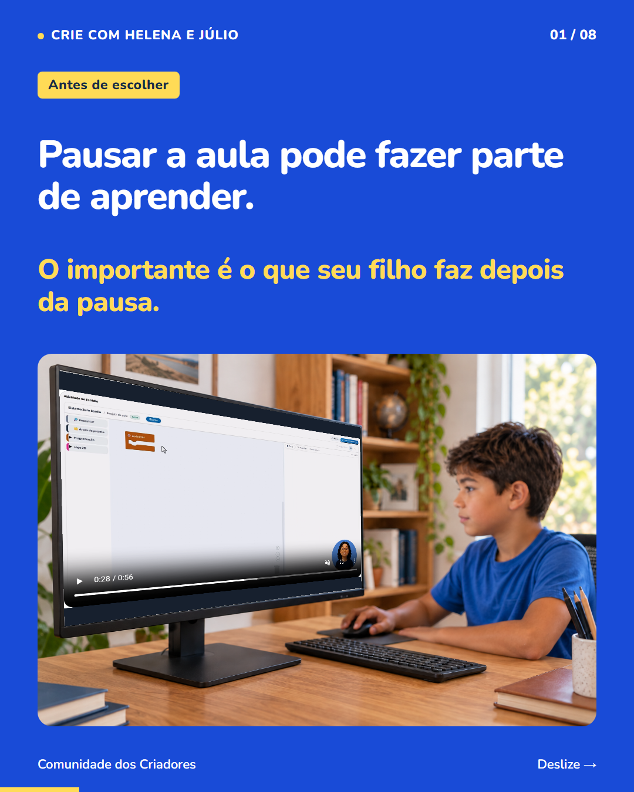
P23 · 8 slides
Pausar para praticar: montar, testar, rever a aula e encontrar ajuda

P57 · 8 slides
Ajudar a entender a dúvida: ouvir, conferir a regra e encontrar orientação
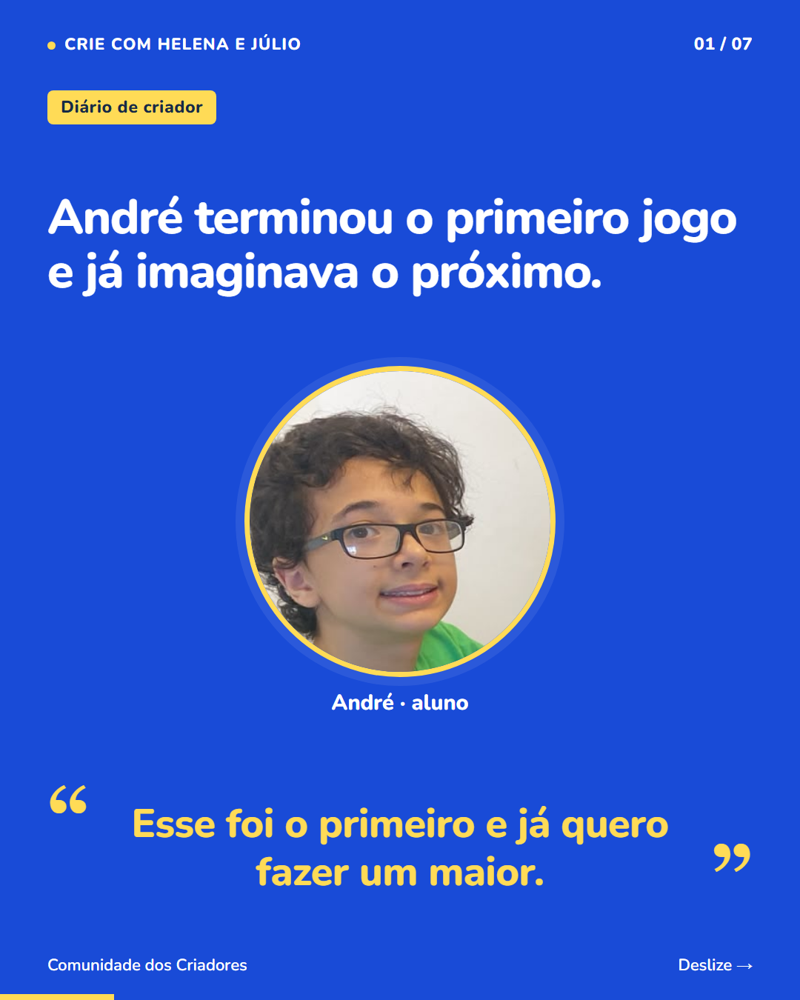
P60 · 7 slides
Vontade de criar o próximo: relato do André e escolhas de um jogo